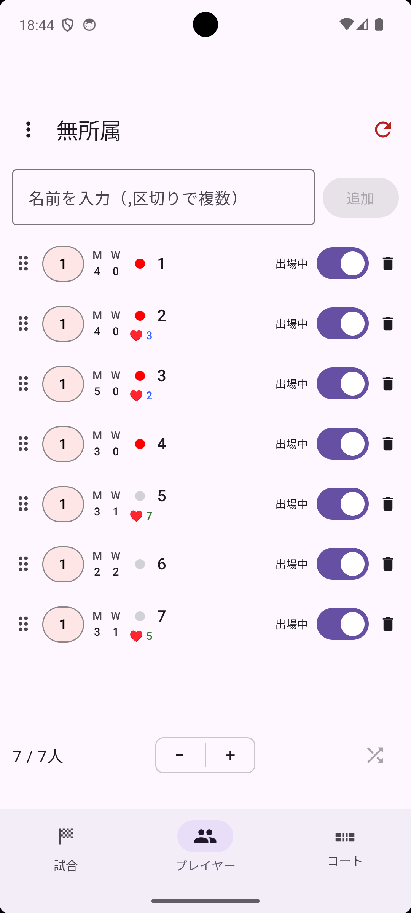
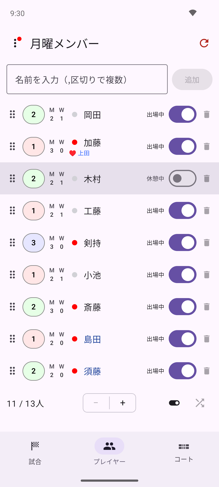
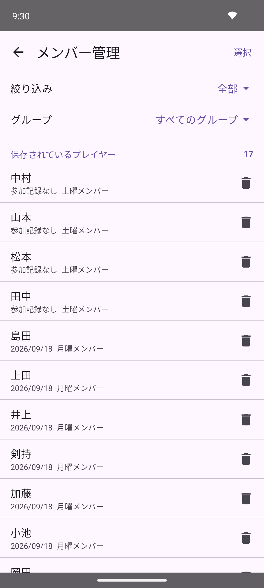
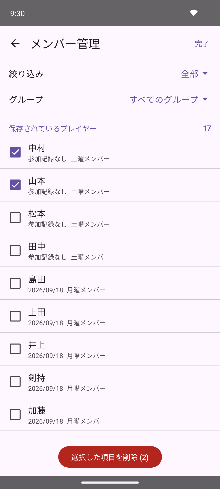

プレイヤータブ下部の ＋ / － ボタンをタップするだけで、プレイヤーの人数を簡単に増減できます（最低4人）。追加されたプレイヤーには、初期状態で「1」「2」「3」…という数字がそのまま名前として割り当てられます。特定の1人だけを削除したい場合は、編集画面右上のゴミ箱アイコン、またはリストの各行右端のゴミ箱アイコンから削除できます。
追加 をタップすると、名前付きでプレイヤーを追加することもできます。カンマ区切りで複数名を一度に入力できます（例：Alice, Bob, Carol, Dave）。名前を入力して 追加 をタップすると、確認ダイアログで 追加 と 置き換え を選べます。
↻ と同じです）。顔ぶれが入れ替わると、試合数や待ち回数の集計が合わなくなるためです。練習会の途中で使わないようご注意ください。－ ボタンはその生成時点の人数より減らせなくなり、一覧各行のゴミ箱アイコンも無効化されます（試合タブ右上の ↻ アイコンで試合結果をリセットすると再び自由に増減できます）。編集画面右上のゴミ箱アイコンからの削除は、この制限に関わらず常に行えます。プレイヤータブ右上の ↻（リセット）アイコンをタップすると、確認アラート「プレイヤーをリセット」が表示されます。リセット を選ぶと、現在のプレイヤーと試合結果がすべて削除され、初期状態の4人にリセットされます。
↻ ボタン（ゲーム情報を削除）とは異なり、こちらはプレイヤー自体も削除されます。試合結果だけを消したい場合は試合タブのリセットをご利用ください。プレイヤータブで各プレイヤー行右端のトグルが出場状態を表します。トグルをオフにすると休憩中となり、そのプレイヤーは次の組み合わせから除外されます。復帰するときはトグルをオンに戻してください。

プレイヤータブでプレイヤーの行をタップすると編集画面が開きます。名前 フィールドを編集してください。フィールドをタップして入力中は、右端に表示される × ボタンで入力内容を一括消去できます。

▲ / ▼ アイコンで、一覧に戻らずそのまま前後のプレイヤーの編集画面に切り替えられます。複数人まとめて名前を確認・変更したいときに便利です。各プレイヤーには 1・2・3 のレベルを設定できます。プレイヤータブのリスト左端にあるレベルバッジをタップするたびに 1→2→3→1 と切り替わります。編集画面の レベル からも変更できます。

レベルはコートへの割り当てに使用されます。詳しくは「高度な使い方」をご覧ください。
レベルバッジの右には、M（試合数）とW（待機回数）が数字で表示されます。
毎回欠席することが多いメンバーには、編集画面の デフォルト欠席 をオンにしておくと、グループを読み込んだ際に自動的に休憩状態でリストに追加されます。
編集画面の ペア セクションから、常に同じペアを組むプレイヤーを指定できます。固定されたペアはプレイヤー名の下に ♥ マーク付きで表示されます。

プレイヤータブのリストで、プレイヤー名の左に丸印が表示されます。赤丸は現在進行中の試合に出場していることを示し、グレーの丸はそれ以外（次の組み合わせ待ちや休憩中など）を示します。

丸印をタップすると、そのプレイヤーはピン留め状態になり、丸印の代わりにピンのアイコンが表示され、行の左端にオレンジのアクセントバーが付いて一覧上で目立つようになります。ピン留めされたプレイヤーは、待ち回数に関わらず次の組み合わせで最優先に選ばれます。もう一度ピンのアイコンをタップすると、ピン留めが解除されて丸印表示に戻ります。

組み合わせはプレイヤーリストの並び順をもとに決まります。同じメンバーで練習を重ねていると、試合タブの ↻ でゲームを初期化するたびに、毎回同じ組み合わせから始まってしまうことがあります。プレイヤータブ下部のシャッフルアイコン（🔀）をタップすると、プレイヤーの名前・レベル・出場設定などをリスト内でランダムに入れ替え、次の組み合わせの偏りを防げます。
↻ リセットボタンで初期化してください。組み合わせはプレイヤーリストの並び順をもとに決まります。各行の左端にある並べ替えハンドル（⋮⋮）を長押ししてドラッグすると、その場でプレイヤーの表示順を入れ替えられます。
いつも参加するメンバーはグループに登録しておくと、次回から名前を入力し直さずに読み込めます。登録した内容は自動的に端末に保存されます。
プレイヤータブ左上の ⋮ メニューから、次の操作ができます。

⋮ アイコンに赤い点が付き、メニューの グループ管理 に人数が表示されます（例：グループ管理 (3)）。プレイヤーは登録済みと未登録の2種類に分かれます。違いは「どこかのグループに入っているかどうか」だけです。
未登録のプレイヤーは、一覧で名前が濃い青色で表示されます。ゲストや体験参加の人をその場で追加しても、登録メンバーが増え続けないようにするための仕組みです。

メンバーをグループに分けておくと、曜日や練習会ごとに異なる顔ぶれをすばやく読み込めます。⋮ メニューの グループ管理 で、登録もグループの手入れも行います。

メンバーを登録する — 画面上部の「登録するプレイヤー」に、まだ登録していないプレイヤーが並びます。最初は全員にチェックが入っているので、登録したくない人（その日だけのゲストなど）をタップしてチェックを外します。次に、すぐ下のグループ一覧から入れたいグループ名をタップすると、チェックした人がそのグループに登録されます。
グループを作る — 一番下の 新しいグループ 欄に名前を入力して 追加 をタップします。グループが作られるだけで、プレイヤーの登録は行われません。続けて、グループ一覧に加わったグループ名をタップして登録してください。
グループ名を変える — グループ行の鉛筆アイコン（✏️）をタップします。
グループを削除する — グループ行のゴミ箱アイコン（🗑）をタップします。
1人ずつ設定する — プレイヤー編集画面の グループ セクションでも、所属グループのトグルを切り替えられます（グループが1つもないときは、このセクションは表示されません）。

読み込む — ⋮ メニューの グループ読込 から、読み込みたいグループを選びます。全部 を選ぶと、登録されている全メンバーを読み込みます。

⋮ メニューの メンバー管理 を開くと、登録されている全メンバーを一覧できます。グループをまたいで「誰が登録されているか」を確認できる唯一の画面です。

一覧は最後に試合に出た日が古い順（記録がない人が先頭）に並びます。各行に名前・最終参加日・所属グループが表示されます。
絞り込み — 上部の 絞り込み をタップして、しばらく参加していないメンバーだけを表示できます。
削除する — 行右端のゴミ箱アイコンで1人ずつ削除できます。まとめて消したいときは右上の 選択 をタップし、対象にチェックを付けてから下部の 選択した項目を削除 をタップします。

すべて削除 — 一覧の一番下の すべて削除 で、登録されている全メンバーと写真を削除し、現在のプレイヤーリストも4人にリセットします。
⋮ メニューの ファイルに書き出し / ファイルから読み込み から、登録されているメンバー全員（すべてのグループ）を CSV ファイルとして書き出したり、書き出したファイルから読み込んだりできます。機種変更時のデータ移行や、表計算ソフトで一括編集したい場合に利用できます。
pairgen.csv（ファイル名は保存時に変更可能）として書き出し、保存先を選択する画面が開きます（端末の「ダウンロード」フォルダやGoogleドライブなど、標準のファイル選択画面から選べます）pairgen.json）も、そのまま読み込めます。書き出しは CSV のみです。書き出した pairgen.csv は、Excel・Google スプレッドシート・Numbers などでそのまま開けます。スマートフォンだけで編集したい場合は、Google ドライブに保存して Google スプレッドシートで開き、編集後に「ファイル」→「ダウンロード」→「カンマ区切り形式（.csv）」で保存し直してから、ファイルから読み込み で選んでください。
2024 や 1/5 のようにしていると、書き出したときに別の形（2024/01/05 など）に変わってしまう場合があります。グループ名や名前に数字だけ・日付に見える文字列を使っている場合は、書き出したあとの内容を確認してください。セルの書式を「テキスト」にしておくと防げます。CSV はただのテキストファイルなので、表計算ソフトやテキストエディタで開いて直接編集できます。内容は次のような形式です。
Name,Level,Groups,AbsentByDefault
田中,1,月曜メンバー,false
鈴木,2,月曜メンバー;土曜メンバー,false
佐藤,1,土曜メンバー,true1行目はヘッダ行で、列の名前を表します。列名は英語で固定です。
1・2・3 で指定します。空欄の場合は 1 になります;）で区切ります。空欄の場合は Group1 というグループに入りますtrue にすると、読み込んだ時点で休憩状態になります。空欄の場合は false（出場）です次の場合は読み込みを中止し、理由を表示します。
"）が閉じていない場合 — 該当する行番号を表示します次の場合は読み込みを続け、確認ダイアログに件数を表示します。内容に納得できなければキャンセルしてください。
1〜3 以外のレベルを 1 にした